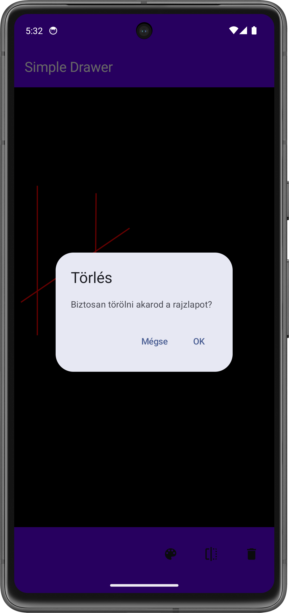
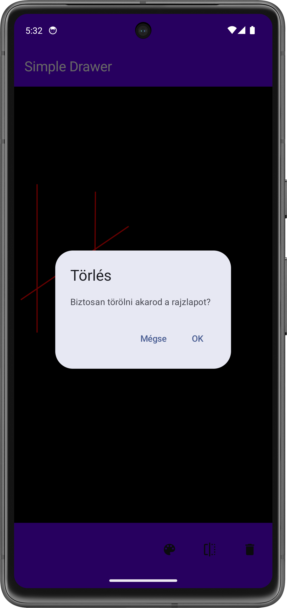

Labor 05 - SQLite - Drawing Application¶
Introduction¶
The task of this lab is to create a simple drawing application. The application allows you to draw lines or points on a canvas and then persistently save the drawn figure so that it can be reloaded even after the application is restarted.


 

During the lab we will encounter the following technologies:
- SQLite
- Scaffold
- TopBar
- BottomBar
- DrawingCanvas
- ViewModel
- DropDownMenu
Room library
During the lab, we will get acquainted with the SQLite library, which allows us to persistently store data in a local SQL database. Modern Android-based developments usually use Room, which is built on SQLite and provides an easy-to-use ORM layer combined with Android lifecycles. However, we considered it important to make the material easy to understand, so we will only examine the SQLite solution for now.
IMSc
After successfully completing the lab tasks, 2 IMSc points can be earned by solving the IMSc task.
Preparations¶
When solving the tasks, do not forget to follow the task submission process.
Creating and downloading a Git repository¶
-
Find the lab invitation URL in Moodle and use it to create your own repository.
-
Wait until the repository is ready, then checkout it.
In university labs, if the system does not ask for a username and password during checkout and the checkout fails, the system probably tried to use a username previously saved on the computer. First, delete the saved login data and try again.
-
Create a new branch called
solutionand work on this branch. -
Write your Neptun code in the
neptun.txtfile. The file should contain nothing else, only the 6 characters of the Neptun code on a single line.
Preparing the project¶
Creating the project¶
Let's create a project called SimpleDrawer in Android Studio:
- Create a new project, select the Empty Activity option.
- The project name should be
SimpleDrawer, the starting packagehu.bme.aut.android.simpledrawer, and the save location should be the SimpleDrawer folder within the checked-out repository. - Select Kotlin as the language.
- The minimum API level should be API24: Android 7.0.
- The Build configuration language should be Kotlin DSL.
FILE PATH
The project should be placed in the SimpleDrawer directory in the repository, and it should be pushed when submitted! Without the code, we cannot give maximum points to the lab!
FILE PATH
The repository path should not contain accents or special characters, as AndroidStudio is sensitive to these and the code will not compile. It is worth working in the root of the C:\ drive.
Adding Resources¶
First, download the compressed file containing the application images, which contains all the images we will need. Copy its contents into the app/src/main/res folder (it helps if you switch from the regular Android view in the top left of Android Studio to the Project view for this time).
Copy the following string resources required for the application into the res/values/strings.xml file:
<resources>
<string name="app_name">Simple Drawer</string>
<string name="style">Style</string>
<string name="line">Line</string>
<string name="point">Point</string>
<string name="color">Color</string>
<string name="red">Red</string>
<string name="green">Green</string>
<string name="blue">Blue</string>
<string name="clear">Clear</string>
<string name="are_you_sure_want_to_clear">Are you sure you want to clear the drawing sheet??</string>
<string name="ok">OK</string>
<string name="cancel">Cancel</string>
</resources>
Are you sure you want to delete the ## Creating the home screen (1 point)
Enforcing portrait layout¶
For the sake of simplicity, we are only supporting portrait mode in our application right now. To do this, in AndroidManifest.xml, within the <activity> tag, modify the following:
Drawing page
<activity
android:name=".MainActivity"
android:exported="true"
android:label="@string/app_name"
android:screenOrientation="sensorPortrait"
android:theme="@style/Theme.SimpleDrawer">
<intent-filter>
<action android:name="android.intent.action.MAIN" />
<category android:name="android.intent.category.LAUNCHER" />
</intent-filter>
</activity>
Creating AppBars¶
Within the existing ui package, create a common package, including a TopBar and a BottomBar Kotlin File, and then write the following into it:
TopBar.kt:
package hu.bme.aut.android.simpledrawer.ui.common
import androidx.compose.material3.ExperimentalMaterial3Api
import androidx.compose.material3.Text
import androidx.compose.material3.TopAppBar
import androidx.compose.material3.TopAppBarDefaults
import androidx.compose.runtime.Composable
import androidx.compose.ui.graphics.Color
import androidx.compose.ui.res.stringResource
import androidx.compose.ui.tooling.preview.Preview
import hu.bme.aut.android.simpledrawer.R
@OptIn(ExperimentalMaterial3Api::class)
@Composable
fun TopBar() {
TopAppBar(
title = {
Text(
text = stringResource(id = R.string.app_name),
color = Color.White
)
},
colors = TopAppBarDefaults.topAppBarColors(containerColor = Color(0xFF6200EE))
)
}
@Composable
@Preview
fun PreviewTopBar() {
TopBar()
}
BottomBar.kt:
package hu.bme.aut.android.simpledrawer.ui.common
import androidx.compose.foundation.layout.Arrangement
import androidx.compose.foundation.layout.Row
import androidx.compose.foundation.layout.fillMaxSize
import androidx.compose.foundation.layout.height
import androidx.compose.foundation.layout.size
import androidx.compose.material3.BottomAppBar
import androidx.compose.material3.Icon
import androidx.compose.material3.IconButton
import androidx.compose.runtime.Composable
import androidx.compose.ui.Alignment
import androidx.compose.ui.Modifier
import androidx.compose.ui.graphics.Color
import androidx.compose.ui.res.painterResource
import androidx.compose.ui.res.stringResource
import androidx.compose.ui.tooling.preview.Preview
import androidx.compose.ui.unit.dp
import hu.bme.aut.android.simpledrawer.R
@Composable
fun BottomBar() {
BottomAppBar(
actions = {
Row(
modifier = Modifier
.fillMaxSize(),
horizontalArrangement = Arrangement.End,
verticalAlignment = Alignment.CenterVertically
) {
IconButton(
onClick = { /*TODO*/ },
modifier = Modifier.size(64.dp)
) {
Icon(
painterResource(id = R.drawable.ic_style),
contentDescription = stringResource(id = R.string.style)
)
//Stílusok
}
}
},
containerColor = Color(0xFF6200EE),
)
}
@Composable
@Preview
fun PreviewBottomBar() {
BottomBar()
}
The BottomBar is a bit more complex, here we can pass composable elements with the actions parameter that will appear as small icons on the AppBar, and we can later add an onClick event to these. This is how we will implement the style change option, when pressed, a window will pop up where you can select the desired style (Line, point)
The DrawingScreen interface¶
Within the ui package, create a screen package. Our DrawingScreen will be placed in this. Here we will place the Scaffold, with the help of which we will implement a TopBar and a BottomBar. Initially, the content of the Scaffold will only be a black Spacer, which will later be replaced by Canvas.
package hu.bme.aut.android.simpledrawer.ui.screen
import androidx.compose.foundation.background
import androidx.compose.foundation.layout.Spacer
import androidx.compose.foundation.layout.fillMaxSize
import androidx.compose.foundation.layout.padding
import androidx.compose.material3.Scaffold
import androidx.compose.runtime.Composable
import androidx.compose.ui.Modifier
import androidx.compose.ui.graphics.Color
import androidx.compose.ui.tooling.preview.Preview
import hu.bme.aut.android.simpledrawer.ui.common.BottomBar
import hu.bme.aut.android.simpledrawer.ui.common.TopBar
@Composable
fun DrawingScreen(modifier: Modifier = Modifier) {
Scaffold(
modifier = modifier,
topBar = {
TopBar()
},
bottomBar = {
BottomBar()
}
) { innerPadding ->
//TODO replace with canvas
Spacer(
modifier = Modifier
.background(Color.Black)
.padding(innerPadding)
.fillMaxSize()
)
}
}
@Composable
@Preview
fun PreviewDrawingScreen() {
DrawingScreen()
}
Finally, let's rewrite the code in MainActivity.kt so that it instantiates the DrawingScreen we just created:
package hu.bme.aut.android.simpledrawer
import android.os.Bundle
import androidx.activity.ComponentActivity
import androidx.activity.compose.setContent
import androidx.activity.enableEdgeToEdge
import hu.bme.aut.android.simpledrawer.ui.screen.DrawingScreen
import hu.bme.aut.android.simpledrawer.ui.theme.SimpleDrawerTheme
class MainActivity : ComponentActivity() {
override fun onCreate(savedInstanceState: Bundle?) {
super.onCreate(savedInstanceState)
enableEdgeToEdge()
setContent {
SimpleDrawerTheme {
DrawingScreen()
}
}
}
}
So that we are done with this, let's start the application! Now we can see the two AppBars and the black screen between them. An icon also appears on the BottomBar, pressing which does nothing yet.
TO BE SUBMITTED (1 point)
Create a screenshot showing the finished home screen (on an emulator, by mirroring the device or by taking a screen shot), a corresponding code snippet, and your neptun code somewhere in the code as a comment' Upload the image to the repository in the solution as f1.png!
The screenshot is a necessary condition for obtaining a score.
Implementing the style selector (1 point)¶
After we have created the BottomBar and the home screen frame, let's implement the style selector. To do this, we need to modify the BottomBar so that when we click on the Style selector button, a menu appears where we can select the drawing mode. This mode can be implemented as a state of the drawing. And as we have seen in previous labs, these states are stored in a separate viewModel.
Creating the ViewModel¶
To use the viewModel, we first need to add a new dependency:
libs.versions.toml:
[versions]
...
lifecycleCompose = "2.9.4"
[libraries]
androidx-lifecycle-viewmodel-compose = { group = "androidx.lifecycle", name="lifecycle-viewmodel-compose", version.ref = "lifecycleVersion" }
build.gradle.kts:
implementation(libs.androidx.lifecycle.viewmodel.compose)
After adding the dependency, don't forget to click the Sync Now button.
After synchronization, we can also create our viewModel. This will help with color/style switching, and later with persistent data storage.
Let's create a DrawingViewModel Kotlin File in the screen package next to DrawingScreen and write the following code in it:
package hu.bme.aut.android.simpledrawer.ui.screen
import androidx.lifecycle.ViewModel
import androidx.lifecycle.viewModelScope
import kotlinx.coroutines.flow.MutableStateFlow
import kotlinx.coroutines.flow.StateFlow
import kotlinx.coroutines.launch
class DrawingViewModel : ViewModel() {
private val _drawingMode = MutableStateFlow(DrawingMode.LINE)
val drawingMode: StateFlow<DrawingMode> = _drawingMode
private val _drawElements = MutableStateFlow<List<Any>>(emptyList())
val drawElements: StateFlow<List<Any>> = _drawElements
fun setDrawingMode(mode: DrawingMode) {
viewModelScope.launch {
_drawingMode.value = mode
}
}
fun addDrawElement(element: Any) {
viewModelScope.launch {
_drawElements.value += element
}
}
}
enum class DrawingMode {
LINE,
POINT
}
DrawingViewModel stores two states (drawing mode and drawn shapes) and returns them as StateFlow.
To represent the drawing style, we need another class, DrawingMode. Since this can only take two values, we will implement it as an Enum Class.
Code Interpretation
Let's interpret the viewModel code with the help of the lab instructor!
Now that we have the viewModel, we just need to modify the BottomBar so that we can set the state.
Style Selector¶
Let's modify the BottomBar so that when we click the Style Selector button, a window appears where we can select the drawing mode. We can do this as follows:
@Composable
fun BottomBar(
viewModel: DrawingViewModel
){
var showStyle by remember { mutableStateOf(false) }
val drawingMode by viewModel.drawingMode.collectAsState()
BottomAppBar(
actions = {
Row (
...
){
IconButton(
onClick = { showStyle = !showStyle },
modifier = Modifier.size(64.dp)
) {
Icon(
painterResource(id = R.drawable.ic_style),
contentDescription = stringResource(id = R.string.style)
)
DropdownMenu(
expanded = showStyle,
onDismissRequest = { showStyle = false}) {
DropdownMenuItem(
text = { Text(
stringResource(id = R.string.point),
color = if (drawingMode == DrawingMode.POINT) Color.Magenta else Color.Black
) },
onClick = {
viewModel.setDrawingMode(DrawingMode.POINT)
showStyle = false
}
)
DropdownMenuItem(
text = { Text(
stringResource(id = R.string.line),
color = if (drawingMode == DrawingMode.LINE) Color.Magenta else Color.Black)
},
onClick = {
viewModel.setDrawingMode(DrawingMode.LINE)
showStyle = false
}
)
}
}
...
}
},
...
)
}
@Composable
@Preview
fun PreviewBottomBar() {
BottomBar(viewModel = viewModel())
}
viewModel
Many times Android Studio cannot find the import required for viewModel(). In such cases, we manually specify the following import:
import androidx.lifecycle.viewmodel.compose.viewModel
Then we modify the BottomBar function call on DrawingScreen and add the viewModel parameter.
package hu.bme.aut.android.simpledrawer.ui.screen
import androidx.compose.foundation.background
import androidx.compose.foundation.layout.Spacer
import androidx.compose.foundation.layout.fillMaxSize
import androidx.compose.foundation.layout.padding
import androidx.compose.material3.Scaffold
import androidx.compose.runtime.Composable
import androidx.compose.ui.Modifier
import androidx.compose.ui.graphics.Color
import androidx.compose.ui.tooling.preview.Preview
import androidx.lifecycle.viewmodel.compose.viewModel
import hu.bme.aut.android.simpledrawer.ui.view.BottomBar
import hu.bme.aut.android.simpledrawer.ui.view.TopBar
@Composable
fun DrawingScreen(
modifier: Modifier = Modifier,
viewModel: DrawingViewModel = viewModel()
) {
Scaffold(
modifier = modifier,
topBar = {
TopBar()
},
bottomBar = {
BottomBar(viewModel = viewModel)
}
) { innerPadding ->
//TODO replace with canvas
Spacer(
modifier = Modifier
.background(Color.Black)
.padding(innerPadding)
.fillMaxSize()
)
}
}
@Composable
@Preview
fun PreviewDrawingScreen() {
DrawingScreen()
}
TO BE SUBMITTED (1 point)
Create a screenshot showing the completed Style Selector opened (on an emulator, mirroring the device or with a screen capture), a corresponding code snippet, and your neptun code somewhere in the code as a comment! Upload the image to the repository in the solution as f2.png!
The screenshot is a necessary condition for getting a score.
Implementing the canvas (1 point)¶
Model classes¶
During the drawing process, we want to draw points and lines. To handle these, let's create two data classes named Line and Point. Let's create a model package in our main package, then implement the two classes:
Point.kt:
package hu.bme.aut.android.simpledrawer.model
import androidx.compose.ui.graphics.Color
data class Point(
var x: Float = 0F,
var y: Float = 0F,
var color: Color = Color.Yellow
)
Line.kt:
package hu.bme.aut.android.simpledrawer.model
import androidx.compose.ui.graphics.Color
data class Line(
var start: Point,
var end: Point,
var color: Color = Color.Yellow
)
This is how we will store our data in the list. It is true that the Line data class will receive the color twice more, but this is just for the sake of simplicity, we will not deal with this parameter.
Canvas¶
Then, inside the common package, create a DrawingCanvas Kotlin File. In this Composable class, we will implement the drawing using the built-in Canvas Composable. This class has a Modifier.pointerInteropFilter parameter, which we will use to handle gestures.
package hu.bme.aut.android.simpledrawer.ui.common
import androidx.compose.foundation.Canvas
import androidx.compose.foundation.background
import androidx.compose.runtime.Composable
import androidx.compose.runtime.getValue
import androidx.compose.runtime.mutableStateOf
import androidx.compose.runtime.remember
import androidx.compose.runtime.setValue
import androidx.compose.ui.ExperimentalComposeUiApi
import androidx.compose.ui.Modifier
import androidx.compose.ui.geometry.Offset
import androidx.compose.ui.graphics.Color
import androidx.compose.ui.input.pointer.pointerInteropFilter
import hu.bme.aut.android.simpledrawer.ui.screen.DrawingMode
import hu.bme.aut.android.simpledrawer.ui.screen.DrawingViewModel
@OptIn(ExperimentalComposeUiApi::class)
@Composable
fun DrawingCanvas(
modifier: Modifier = Modifier,
currentColor: Color = Color.Red,
drawingMode: DrawingMode,
viewModel: DrawingViewModel,
drawElements: List<Any>
) {
var startPoint by remember { mutableStateOf<Offset?>(null) }
var endPoint by remember { mutableStateOf<Offset?>(null) }
var tempPoint by remember { mutableStateOf<Offset?>(null) }
Canvas(
modifier = modifier
.background(Color.Black)
.pointerInteropFilter { event ->
when (event.action) {
/*TODO*/
//ACTION_DOWN
//ACTION_MOVE
//ACTION_UP
}
true
}
) {
//TODO drawElements
}
}
Within event.action we will handle the MotionEvent.ACTION_DOWN, MotionEvent.ACTION_MOVE, MotionEvent.ACTION_UP events, as well as drawing on the Canvas.
ACTION_DOWN:
MotionEvent.ACTION_DOWN -> {
startPoint = Offset(event.x, event.y)
tempPoint = startPoint
}
startPoint variable.
ACTION_MOVE:
MotionEvent.ACTION_MOVE -> {
tempPoint = Offset(event.x, event.y)
if (drawingMode == DrawingMode.LINE) {
endPoint = tempPoint
}
}
tempPoint. If we draw a line, we need to write the position in endPoint.
ACTION_UP:
MotionEvent.ACTION_UP -> {
if (drawingMode == DrawingMode.POINT) {
tempPoint?.let {
viewModel.addDrawElement(Point(it.x, it.y, currentColor))
}
} else if (drawingMode == DrawingMode.LINE) {
endPoint?.let {
startPoint?.let { start ->
viewModel.addDrawElement(
Line(
Point(start.x, start.y, currentColor),
Point(it.x, it.y, currentColor),
currentColor
)
)
}
}
}
startPoint = null
endPoint = null
tempPoint = null
}
In this event, we handle when the user lifts their finger from the screen. Here too, the algorithm is divided into two options, namely, if it is a point, then only the value of tempPoint needs to be recorded. However, if it is a line, then the values of endPoint and startPoint need to be recorded as a line. Null checking is required for both events!
Once the events are available, all that remains is to draw them. We can do this by drawing the data stored in drawElements one by one, depending on their type:
Canvas (..){
drawElements.forEach { element ->
when (element) {
is Point -> drawCircle(
color = element.color,
center = Offset(element.x, element.y),
radius = 5f
)
is Line -> drawLine(
color = element.color,
start = Offset(element.start.x, element.start.y),
end = Offset(element.end.x, element.end.y),
strokeWidth = 5f
)
}
}
}
DrawingCanvas, but we still can't see the drawing until we lift our finger from the screen. This can be fixed as follows:
Canvas (..){
...
tempPoint?.let {
if (drawingMode == DrawingMode.POINT) {
drawCircle(color = currentColor, center = it, radius = 5f)
} else if (drawingMode == DrawingMode.LINE && startPoint != null) {
drawLine(color = currentColor, start = startPoint!!, end = it, strokeWidth = 5f)
}
}
}
Then modify the DrawingScreen and replace the Spacer with the DrawingCanvas we just created.
@Composable
fun DrawingScreen(
modifier: Modifier = Modifier,
viewModel: DrawingViewModel = viewModel()
) {
val drawingMode by viewModel.drawingMode.collectAsState()
val drawElements by viewModel.drawElements.collectAsState()
Scaffold(
...
) { innerPadding ->
DrawingCanvas(
modifier = Modifier
.padding(innerPadding)
.fillMaxSize(),
drawingMode = drawingMode,
viewModel = viewModel,
drawElements = drawElements
)
}
}
TO BE SUBMITTED (1 point)
Create a screenshot showing the finished DrawingScreen (on emulator, mirroring device or with a screen capture) with a few lines and dots, a code snippet of the DrawingCanvas, and your neptun code somewhere in the code as a comment! Upload the image to the repository in the solution as f3.png!
The screenshot is a necessary condition for getting a score.
Implementing persistence using a SQLite database (1 point)¶
In order for the objects we draw to persist even after exiting the application, we need to somehow organize our data in a form that we can easily store in a SQLite database.
Let's create a new package within hu.bme.aut.android.simpledrawer, which we will name sqlite.
Defining tables¶
During database management, we have to work with many constant variables, such as the names of columns in tables, table names, database file names, schema creation and deletion scripts, etc. It is worth storing these in a common place, so that when editing or introducing a new entity, you do not have to jump between source files, and it is easier to generate scripts that create and delete the entire database. Let's create a new singleton class with the object keyword within the sqlite package called DbConstants.
First of all, we add the database name and version as constants. If we want to change the schema of our database, we need to increment the latter, so that we can avoid unwanted errors due to incompatibility.
package hu.bme.aut.android.simpledrawer.sqlite
object DbConstants{
const val DATABASE_NAME = "simpledrawer.db"
const val DATABASE_VERSION = 1
//Points
//Lines
}
Point class in a class called DbConstants. Within the classes, we also create an enum to make it easier to manage the table columns, and then we store the SQL statement used to create the table and the table name in constants. Finally, we create the functions that need to be called when the table is created or upgraded:
object Points {
const val DATABASE_TABLE = "points"
enum class Columns {
ID, COORD_X, COORD_Y
}
private val DATABASE_CREATE = """create table if not exists $DATABASE_TABLE (
${Columns.ID.name} integer primary key autoincrement,
${Columns.COORD_X.name} real not null,
${Columns.COORD_Y.name} real not null
);"""
private const val DATABASE_DROP = "drop table if exists $DATABASE_TABLE;"
fun onCreate(database: SQLiteDatabase) {
database.execSQL(DATABASE_CREATE)
}
fun onUpgrade(database: SQLiteDatabase, oldVersion: Int, newVersion: Int) {
database.execSQL(DATABASE_DROP)
onCreate(database)
}
}
Notice that we have created an inner class called Points inside the DbConstants class, in which we store the constant values belonging to the table that stores the Points entities. If our application stores multiple entities in a database, it is worth storing the constants belonging to each class in separate inner classes. This way, the code will be much more transparent and maintainable than if we were to add all the constants of all the tables to DbConstants in bulk. These inner classes practically exist with the same name as the entity classes. So let's add the Lines class in a similar way:
object Lines {
const val DATABASE_TABLE = "lines"
enum class Columns {
ID, START_X, START_Y, END_X, END_Y
}
private val DATABASE_CREATE = """create table if not exists $DATABASE_TABLE (
${Columns.ID.name} integer primary key autoincrement,
${Columns.START_X.name} real not null,
${Columns.START_Y.name} real not null,
${Columns.END_X.name} real not null,
${Columns.END_Y.name} real not null
);"""
private const val DATABASE_DROP = "drop table if exists $DATABASE_TABLE;"
fun onCreate(database: SQLiteDatabase) {
database.execSQL(DATABASE_CREATE)
}
fun onUpgrade(database: SQLiteDatabase, oldVersion: Int, newVersion: Int) {
database.execSQL(DATABASE_DROP)
onCreate(database)
}
}
It is also worth noting that we did not declare the classes with the class keyword. Instead, we use object, which the Kotlin language uses to ensure that DbConstants and the Points and Lines classes in it behave as singletons, meaning that an instance of them is created when the application is run, and no further instances can be created of them.
Creating the helper class¶
To create the database, we need a helper class that creates the database itself and initializes the tables within it. In our case, this will be the DbHelper class, which is derived from the SQLiteOpenHelper class. Let's add this to the sqlite package as well.
package hu.bme.aut.android.simpledrawer.sqlite
import android.content.Context
import android.database.sqlite.SQLiteDatabase
import android.database.sqlite.SQLiteOpenHelper
class DbHelper(context: Context):
SQLiteOpenHelper(context, DbConstants.DATABASE_NAME, null, DbConstants.DATABASE_VERSION) {
override fun onCreate(sqLiteDatabase: SQLiteDatabase) {
DbConstants.Lines.onCreate(sqLiteDatabase)
DbConstants.Points.onCreate(sqLiteDatabase)
}
override fun onUpgrade(
sqLiteDatabase: SQLiteDatabase,
oldVersion: Int,
newVersion: Int
) {
DbConstants.Lines.onUpgrade(sqLiteDatabase, oldVersion, newVersion)
DbConstants.Points.onUpgrade(sqLiteDatabase, oldVersion, newVersion)
}
}
In addition, we need a helper class that brings all this together and allows us to easily manage our database. This will be PersistentDataHelper, still in the sqlite package. In it, we will implement functions such as open() and close(), which we can use to open and close the database connection. In addition, in this class, we will also implement the functions that are responsible for writing data to and reading it from the database. Make sure to select your own Point class during the import.
package hu.bme.aut.android.simpledrawer.sqlite
import android.content.Context
import android.database.sqlite.SQLiteDatabase
import android.database.sqlite.SQLiteException
class PersistentDataHelper(context: Context) {
private var database: SQLiteDatabase? = null
private val dbHelper: DbHelper = DbHelper(context)
private val pointColumns = arrayOf(
DbConstants.Points.Columns.ID.name,
DbConstants.Points.Columns.COORD_X.name,
DbConstants.Points.Columns.COORD_Y.name,
)
private val lineColumns = arrayOf(
DbConstants.Lines.Columns.ID.name,
DbConstants.Lines.Columns.START_X.name,
DbConstants.Lines.Columns.START_Y.name,
DbConstants.Lines.Columns.END_X.name,
DbConstants.Lines.Columns.END_Y.name,
)
@Throws(SQLiteException::class)
fun open() {
database = dbHelper.writableDatabase
}
fun close() {
dbHelper.close()
}
//PersistPoints
//RestorePoints
//ClearPoints
//CursorToPoint
//PersistLines
//RestoreLines
//ClearLines
//CursorToLine
}
Complete the PersistentDataHelper class as follows:
- PersistPoints: Here we need to implement the storage of points. First, we empty the database, then we go through the received List parameter and save the points one by one.
- RestorePoints: Here we need to implement the loading of points. For this, we use a temporary MutableList, to which we add the read points.
- ClearPoints: With this function, we delete the Points table from the database.
- CursorToPoint: With this function, we read the data of a single point from the database.
- PersistLines: Here we need to implement the storage of lines. First, we empty the database, then we go through the received List parameter and save the lines one by one.
- RestoreLines: Here we need to implement the loading of lines. For this we use a temporary MutableList, to which we add the read lines.
- ClearLines: With this function we delete the Lines table from the database.
- CursorToLine: With this function we read the data of a single line from the database.
1. PersistPoints
fun persistPoints(points: List<Point>) {
clearPoints()
for (point in points) {
val values = ContentValues()
values.put(DbConstants.Points.Columns.COORD_X.name, point.x)
values.put(DbConstants.Points.Columns.COORD_Y.name, point.y)
database!!.insert(DbConstants.Points.DATABASE_TABLE, null, values)
}
}
fun restorePoints(): MutableList<Point> {
val points: MutableList<Point> = ArrayList()
val cursor = database!!.query(
DbConstants.Points.DATABASE_TABLE,
pointColumns,
null,
null,
null,
null,
null
)
cursor.moveToFirst()
while (!cursor.isAfterLast) {
val point: Point = cursorToPoint(cursor)
points.add(point)
cursor.moveToNext()
}
cursor.close()
return points
}
3. ClearPoints
fun clearPoints() {
database!!.delete(DbConstants.Points.DATABASE_TABLE, null, null)
}
4. CursorToPoints
private fun cursorToPoint(cursor: Cursor): Point {
val point = Point(
cursor.getFloat(DbConstants.Points.Columns.COORD_X.ordinal),
cursor.getFloat(DbConstants.Points.Columns.COORD_Y.ordinal),
Color(Color.Red.toArgb())
)
return point
}
5. PersistLines
fun persistLines(lines: List<Line>) {
clearLines()
for (line in lines) {
val values = ContentValues()
values.put(DbConstants.Lines.Columns.START_X.name, line.start.x)
values.put(DbConstants.Lines.Columns.START_Y.name, line.start.y)
values.put(DbConstants.Lines.Columns.END_X.name, line.end.x)
values.put(DbConstants.Lines.Columns.END_Y.name, line.end.y)
database!!.insert(DbConstants.Lines.DATABASE_TABLE, null, values)
}
}
fun restoreLines(): MutableList<Line> {
val lines: MutableList<Line> = ArrayList()
val cursor = database!!.query(
DbConstants.Lines.DATABASE_TABLE,
lineColumns,
null,
null,
null,
null,
null
)
cursor.moveToFirst()
while (!cursor.isAfterLast) {
val line: Line = cursorToLine(cursor)
lines.add(line)
cursor.moveToNext()
}
cursor.close()
return lines
}
7. ClearLines
fun clearLines() {
database!!.delete(DbConstants.Lines.DATABASE_TABLE, null, null)
}
8. CursorToLine
private fun cursorToLine(cursor: Cursor): Line {
val line = Line(
Point(
cursor.getFloat(DbConstants.Lines.Columns.START_X.ordinal),
cursor.getFloat(DbConstants.Lines.Columns.START_Y.ordinal)
),
Point(
cursor.getFloat(DbConstants.Lines.Columns.END_X.ordinal),
cursor.getFloat(DbConstants.Lines.Columns.END_Y.ordinal)
),
Color(Color.Red.toArgb())
)
return line
}
ViewModel Extension¶
For persistence to work properly, we need to extend the viewModel so that it saves the data to the database after each drawing. This way, our data will persist even if we restart the application. In order to see this again on the drawing interface, we need to load the drawing. The init{} block will play a role in this.
class DrawingViewModel(application: Application): AndroidViewModel(application) {
//DrawingMode
//DrawElements
private val dataHelper = PersistentDataHelper(application)
init{
loadDrawElements()
}
//setDrawingMode
fun addDrawElement(element: Any) {
viewModelScope.launch {
_drawElements.value += element
saveDrawElements()
}
}
private fun saveDrawElements() {
viewModelScope.launch {
dataHelper.open()
dataHelper.clearPoints()
dataHelper.clearLines()
val points = _drawElements.value.filterIsInstance<Point>()
val lines = _drawElements.value.filterIsInstance<Line>()
dataHelper.persistPoints(points)
dataHelper.persistLines(lines)
dataHelper.close()
}
}
private fun loadDrawElements() {
viewModelScope.launch {
dataHelper.open()
val points = dataHelper.restorePoints()
val lines = dataHelper.restoreLines()
_drawElements.value = points + lines
dataHelper.close()
}
}
}
In the init{} block, loadDrawElements() is called, which is used to read the data from the database using the previously defined restorePoints and restoreLines functions, and then add it to our List.
Saving works in a similar way, only this function is called when we have drawn.
ViewModel
viewModel is basically context-independent, and it should be, but in this case we can see that PersistentDataHelper needs the context to access the database. So instead of the ViewModel class, we derive our DrawingViewModel from AndroidViewModel, which now accepts Application as a parameter.
This is solved in larger projects with a more complex architecture and Dependency Injection, so the context-independence of the ViewModel can be maintained.
So let's change the instantiation of DrawingViewModel in DrawingScreen as well:
@Composable
fun DrawingScreen(
modifier: Modifier = Modifier,
viewModel: DrawingViewModel = viewModel(
factory = ViewModelProvider.AndroidViewModelFactory(
LocalContext.current.applicationContext as Application
)
)
) {
...
}
TO BE SUBMITTED (1 point)
Create a screenshot showing the finished DrawingScreen (on an emulator, mirroring the device or with a screen capture) with a few lines and points, and the corresponding code snippet, as well as your neptun code somewhere in the code as a comment! Upload the image to the repository in the solution as f4.png!
The screenshot is a necessary condition for obtaining a score.
Independent task: Clearing the canvas (1 point)¶
Add a new control to the BottomBar that is responsible for clearing! When you press it, a dialog box should pop up and warn you that the clearing cannot be undone! It should have a positive and a negative button!
The button icon should be R.drawable.ic_clear_canvas!
BEADANDÓ (1 point)
Create a screenshot showing the deletion confirmation dialog box (on an emulator, by mirroring the device or by taking a screenshot), the code snippet that performs the clearing, and your Neptune code somewhere in the code as a comment! Upload the image to the repository in the solution as f5.png!
The screenshot is a necessary condition for getting a score.
iMSc task (2 iMSc points)¶
Let's add a control to the application that can change the drawing color between the 3 main colors (RGB).
Attention: the color of the given object must also be saved in the database!
Database
It is worth starting Wipe Data or changing the version of the database, so that if we change its structure, it will be saved.
BEADANDÓ (1 iMSc point)
Create a screenshot showing the drawing page with the different colors (on an emulator, mirroring the device or with a screen capture), a corresponding code fragment, and your neptun code somewhere in the code as a comment! Upload the image to the repository in the solution as f6.png!
The screenshot is a necessary condition for obtaining a score.
BEADANDÓ (1 iMSc point)
Create a screenshot showing the code snippet that saves different colors, as well as your Neptune code somewhere in the code as a comment! Upload the image to the repository in the solution as f7.png!
The screenshot is a necessary condition for obtaining a score.